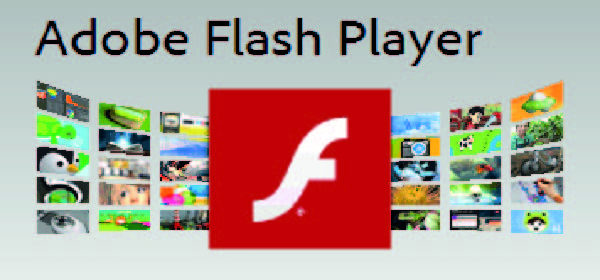

Bienvenido a Adobe Flash
Te damos la bienvenida a mi pagina de mi curso de Adobe Flash.
Cabe destacar que Adobe Flash es un Curso muy interesante e importante para el desarrollo de diseño de Páginas Web.
Flash Player está disponible para las versiones más recientes de los navegadores más populares (Internet Explorer, Safari, Opera, etcétera).
